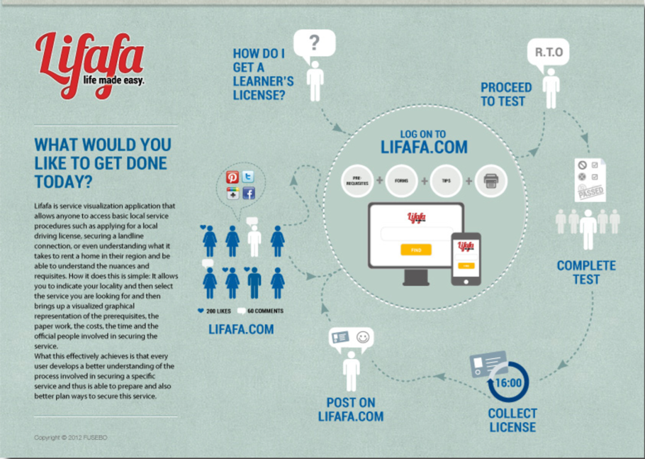
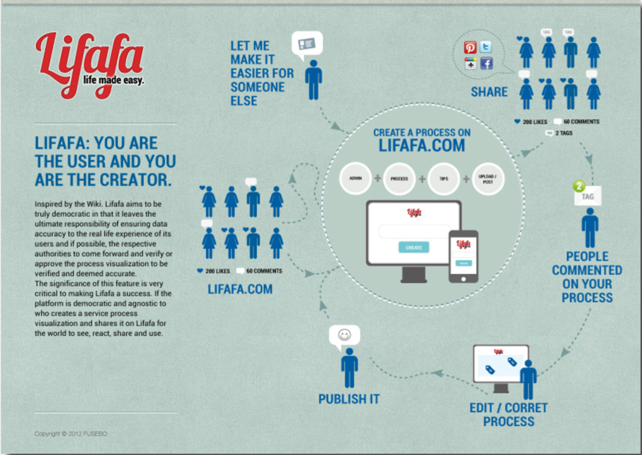
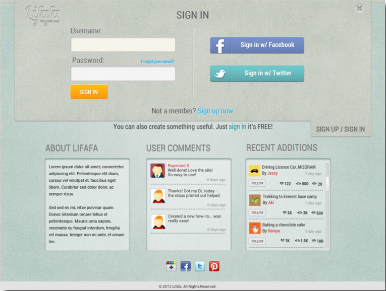
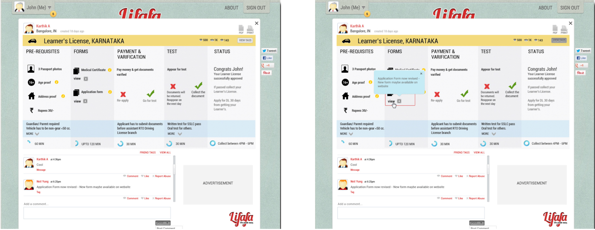

Lifafa - POC and Design
A truly social app: for the people by people
Duration:
2 Month
Type:
Concept Design
The Goal
Paper work and procedures everywhere you go- there must be a way to understand and simplify it?
Anywhere in the world, whatever one does, there is no escaping procedural paper work, forms to fill, officials to meet and money to be spent on these activities. Consider for example, if you move into a new city and need to get a new gas connection, telephone line or even a local driving license.
What it really takes, is patience, money and knowledge on how to go about fulfilling the prerequisites required to complete these procedures and secure the services we seek with the least possible fuss.
Solution
The system had to sustain and users had to be able to use them without any aberrations. To make sure this happened we adopted a user centered design process that could help us iterate quickly, fail from the mistakes and redesign faster.
• We decided to design a ecosystem that would include stake holders, users and the system itself. The system had to survive the test of time and be foolproof.
• This necessitated for imbibing a service design fueled by the power of social network that can self sustain since users are the creators and creators are user.
• The designs would spread across all 3 form factors starting with desktops..
• For the ecosystem to be built we had identified the following; stake holders, supporting system, users and environment
System Design Process
Lifafa: You are the user, you are the creator
CLifafa: You are the user and you are the creator. Amen.
Inspired by the Wiki. Lifafa aims to be truly democratic in that it leaves the ultimate responsibility of ensuring data accuracy to the real life experience of its users and if possible, the respective authorities to come forward and verify or approve the process visualization to be veri ed and deemed accurate.
The signicance of this feature is very critical to making Lifafa a success. If the platform is democratic and agnostic to who creates a service process visualization and shares it on Lifafa for the world to see, react, share and use.

How this works?
This allows you to indicate your locality
and then select the service you are looking for and then brings up a visualized graphical representation of the prerequisites, the paper work, the costs, the time and the of cial people involved in securing the service.
What this effectively achieves is that every user develops a better understanding of the process involved in securing a speci c service and thus is able to prepare and also better plan ways to secure this service.

What makes Lifafa a social app?
Lifafa is a democratic and open platform that allows anyone to add his or her experiences and suggestions on how to secure any service, anywhere in the world. As an application, it is can be accessed via a Facebook login (using Facebook connect) or even Twitter (using Twitter credentials) or users can simply choose to register with Lifafa directly.

To make things more social than ever, Lifafa also allows anyone who’s signed
in to the application to view and comment on any service visualization or infographic and even make suggestions on how to further enhance the experience of securing that service. The illustrative screen above shows how the services I create are visible to me and to the world and allows friends and others
to react to it. The option to comment on or suggest changes by anyone who is on Lifafa, makes it very democratic and Wiki-like.
Its also a well established and researched fact that our visual memories are far more dominant than any other type of memory recall. With this in mind, visualizing the entire process ow with all its impacting parameters: Prerequisites, paperwork, forms, costs, of cial personnel involved, timerequired and process ow- makes it somewhat easier for the user to visually recollect the process and its pieces and also then comprehend the ner nuances of the processes involved in securing a service.
Use Case Scenarios

Create your own visualization
Creating a visualization of the entire process for a service that fellow users can also view and use it if they require it is what Lifafa is all about. Importantly, other users can also choose to pick an existing process that’s been visualized and “revise” it to create a new one for a new state or region that has only minor differences and can thus create a new service visualization in matter of minutes
rather than have to create one from scratch.Another practical aspect to consider is that most creators may not have the time and patience to create an entire service visualization in one sitting. In this case, the option to be able to incrementally by saving it in his or her Lifafa (envelope) allows the option to build the visualization at leisure except for the fact that someone else could be working on the same service visualization and be the rst to upload it and share it on Lifafa!
Lifafa: A truly social app: for the people by people.
The best part about Lifafa is that almost anyone who has some personal experience of securing a public utility service or any other procedure-based service can create a process visualization and share their experience and have others bene t from it.
With this understanding, one also realizes that Lifafa can be applied to any township, city, state or country. All it takes is initiative for any individual to share their personal experience of securing a service and then using the process visualization tool on Lifafa to recreate their experience and then share it with the world to make the lives of so many others easier.
The satisfaction of sharing an experience and making it valuable to so many others can be unsurpassable. Lifafa aims to be always free and always open to any user who wants to become a creator.
It’s a Services-Wiki of sorts and it’s here to make your life a lot easier